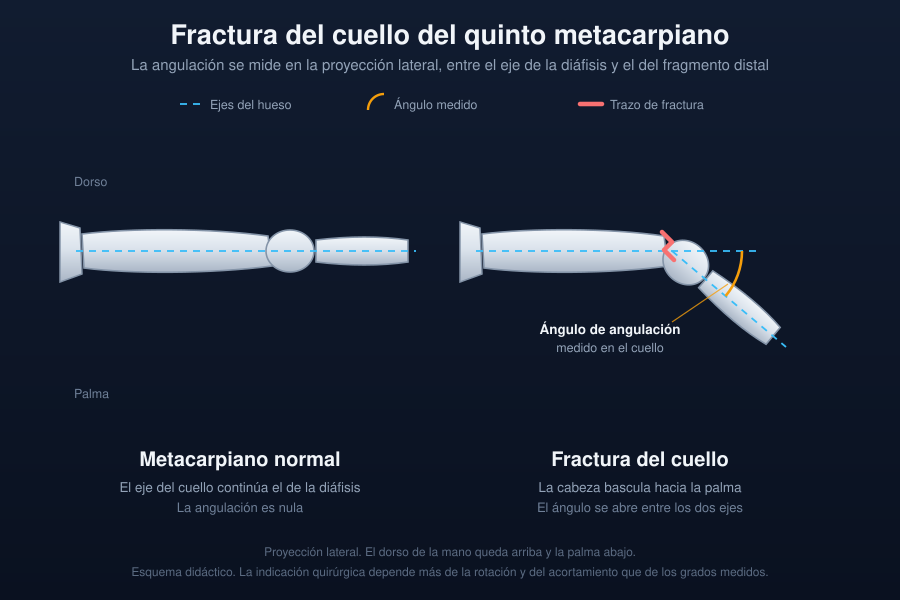

Ficha del catálogo
Fractura del cuello del quinto metacarpiano (fractura del boxeador)
- Sistema
- Óseo
- Modalidad
- RX
- Región
- Mano
- Dificultad
- Básico
Es la fractura más frecuente de la mano y se produce al golpear con el puño cerrado una superficie dura. El trazo asienta en el cuello del quinto metacarpiano y la cabeza bascula hacia la palma por la tracción de los músculos intrínsecos. Se tolera bastante angulación sin secuela funcional porque el quinto radio es muy móvil, pero la rotación mal alineada sí deja déficit permanente. Conviene registrar el mecanismo porque las heridas por mordedura humana en los nudillos se infectan con frecuencia.
Técnica
Proyecciones dorsopalmar, oblicua y lateral de la mano. La lateral es la que permite medir la angulación palmar de la cabeza, que es el dato que decide el tratamiento.
Qué observar
- Trazo transversal u oblicuo corto en el cuello del quinto metacarpiano
- Basculación palmar de la cabeza metacarpiana en la proyección lateral
- Acortamiento del radio afectado con descenso del nudillo
- Signos de malrotación valorados en la clínica más que en la imagen
- Solución de continuidad cutánea o burbujas de gas que sugieren mordedura
- Fracturas asociadas de los metacarpianos vecinos o de las falanges
Hallazgos
Fractura del cuello del quinto metacarpiano con angulación palmar de la cabeza y edema de partes blandas del borde cubital de la mano.
Perlas
El grado de angulación aceptable aumenta desde el segundo hasta el quinto metacarpiano porque la movilidad de las articulaciones carpometacarpianas cubitales compensa la deformidad. La indicación quirúrgica depende más de la rotación y del acortamiento que de los grados medidos en la lateral.
Diagnóstico diferencial
- Fractura de la base del primer metacarpiano
- Afecta al pulgar y suele ser intraarticular con subluxación de la base.
- Luxación carpometacarpiana
- Pérdida de la congruencia de las bases sin trazo en el cuello.
- Fractura de falange proximal
- El trazo está distal a la articulación metacarpofalángica.
Simuladores
- Superposición de los metacarpianos en la proyección lateral
- Canal nutricio oblicuo de la diáfisis
- Fisis no cerrada en el adolescente
Por modalidad
- RX
- Suficiente para el diagnóstico y para el control evolutivo
- TC
- Solo en trazos intraarticulares complejos o consolidación viciosa
- US
- Puede localizar cuerpos extraños en heridas asociadas
Protocolo
Tres proyecciones de mano centradas en el borde cubital. Control radiográfico tras la reducción y a las dos semanas si se optó por tratamiento conservador.
Clasificación
Se describe por la localización del trazo en cabeza, cuello, diáfisis o base, y por el grado de angulación palmar medido en la proyección lateral.
Errores frecuentes
- Medir la angulación en la proyección frontal en lugar de la lateral
- No mencionar la posible mordedura humana ante una herida en el nudillo
- Olvidar revisar los metacarpianos adyacentes y las bases carpometacarpianas

mano metacarpiano fractura del boxeador angulacion palmar urgencias mordedura trauma